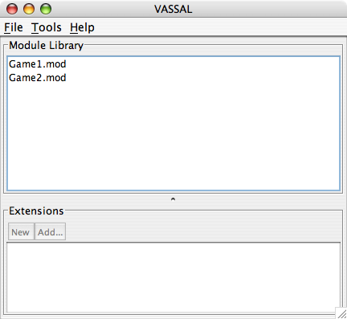
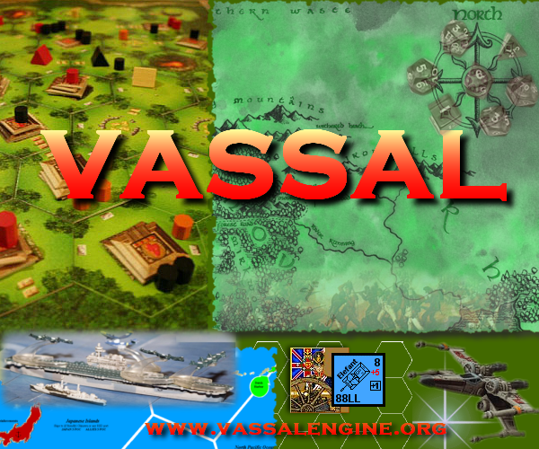

Overview
VASSAL is a general-purpose engine for building online versions of
traditional turn-based games. To play a game using VASSAL, you must first have a module for that game. Many modules are available for download on
the VASSAL
Modules page, although a module need not be hosted on the web
site to be playable.
Quick Start
For an overview of VASSAL's capabilities, select Help->Take the Tour, and step through the tour by hitting the Step Forward
button.
To play a game, download a VASSAL module file to your computer. Select File->Open Module
and choose the downloaded module. This will open a controls
window for the game. Start a new game or load a saved game by
using the File menu of the
controls window. Some modules come with optional extensions,
which can be downloaded separately. To enable an extension,
right-click (Mac users: Command-click) on the module in the
Module Library window, choose Add Extension and select the downloaded extension.
You can also specify any number of directories containing
saved games and load those games directly from the Module Library
window.
From the Module Library's File
menu, you can edit any module or extension, or create new ones
from scratch. You can also import modules created by Aide de
Camp 2 (support for other formats is planned for the future).
Select Tools->Server Status to
see what games are being played on the live server. To connect to the server, load a module and hit the  Connect
button. To chat with other players, double-click on the room with
those players. To begin playing, one player must start a game
from the File menu. The other player right-clicks on the first player's name in the server controls and selects Synchronize.
Connect
button. To chat with other players, double-click on the room with
those players. To begin playing, one player must start a game
from the File menu. The other player right-clicks on the first player's name in the server controls and selects Synchronize.
VASSAL supports languages other than English. To change your preferred language, open any module, choose File->Preferences and select your language from the drop-down menu in the General tab. If your language is not listed, you can help provide a translation by selecting Tools->Translate VASSAL User Interface. Further details are given here.
Further Documentation
Online documentation is available on the wiki.
- The Getting
Started Guide has instructions on how to load and play games online
using VASSAL
- The Reference Manual has
detailed
instructions on how to build modules for VASSAL, including how to use
its Java programming interface
- See the version history for a
list of recent changes.
License
The VASSAL Engine is
supported by an open-source
project founded and administered by Rodney
Kinney
and distributed under the GNU Library General Public License
(LGPL). This distribution includes a number of third-party binary
libraries, distributed under terms of their respective licenses.
Artwork and other media contained in module files are the
property of their respective owners. The VASSAL web site
administrators will comply with any request to remove copyrighted
material from the web site.
Enjoy!
rk
